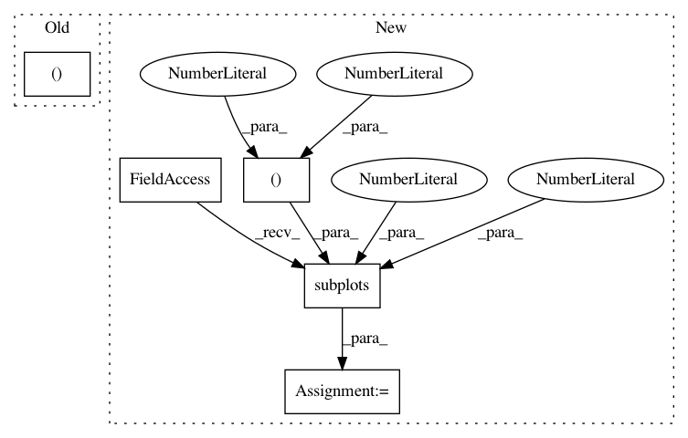

71b1e873e70dca43cd12870d4c0f497015f41970,examples/datasets/plot_make_imbalance.py,,,#,53
Before Change
for i, multiplier in enumerate(multipliers, start=1):
ax = axs[i]
X_, y_ = make_imbalance(
X,
y,
sampling_strategy=ratio_func,
After Change
import matplotlib.pyplot as plt
from imblearn.datasets import make_imbalance
fig, axs = plt.subplots(nrows=2, ncols=3, figsize=(15, 10))
X.plot.scatter(
x="feature 1",
y="feature 2",
In pattern: SUPERPATTERN
Frequency: 3
Non-data size: 5
Instances
Project Name: scikit-learn-contrib/imbalanced-learn
Commit Name: 71b1e873e70dca43cd12870d4c0f497015f41970
Time: 2021-02-17
Author: g.lemaitre58@gmail.com
File Name: examples/datasets/plot_make_imbalance.py
Class Name:
Method Name:
Project Name: scikit-learn-contrib/imbalanced-learn
Commit Name: 3444430a2a1488de3b96249e363ff4a8aab8a5dd
Time: 2021-02-12
Author: g.lemaitre58@gmail.com
File Name: examples/over-sampling/plot_comparison_over_sampling.py
Class Name:
Method Name:
Project Name: matplotlib/matplotlib
Commit Name: ac69b1035a42e47798e4ea7167f616754be49452
Time: 2020-05-01
Author: toddrjen@gmail.com
File Name: examples/ticks_and_spines/tick-formatters.py
Class Name:
Method Name: